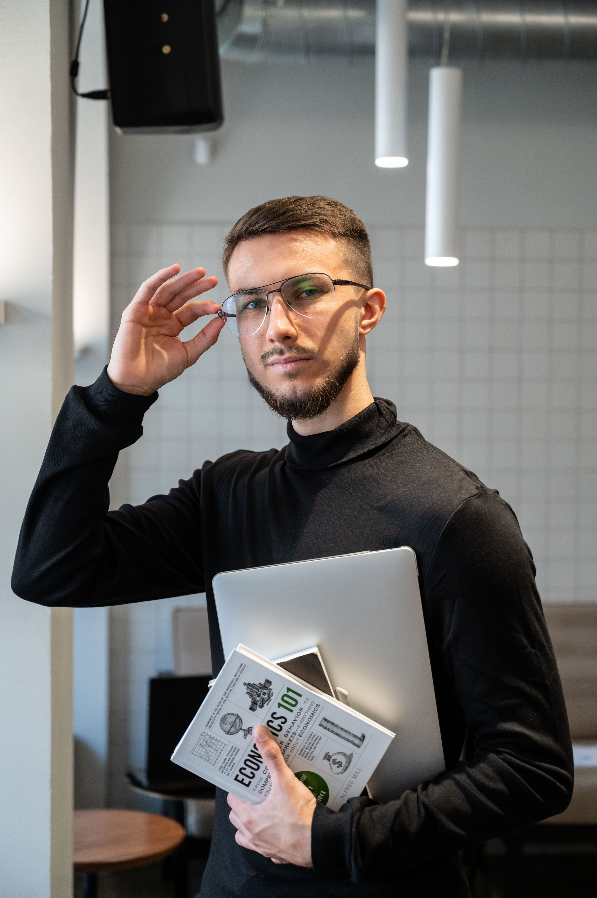
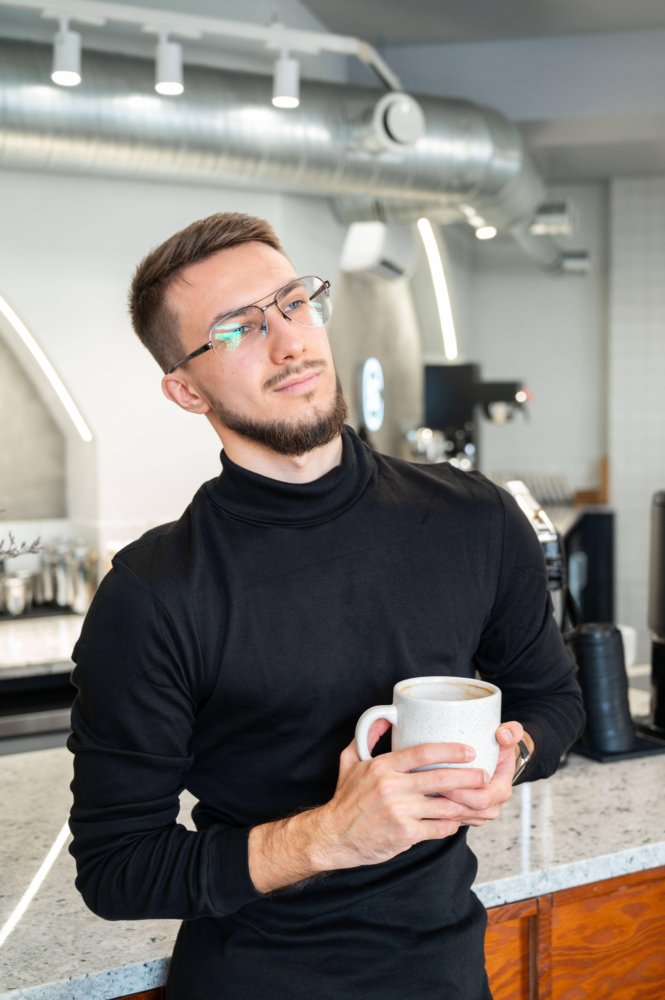

CRM и интеграции
amoCRM, RetailCRM, YClients: воронки, сценарии, связка сайта и мессенджеров, поддержка при падениях и правки
CRM-маркетолог с упором на автоматизацию воронок, аналитику и измеримые процессы. Могу и у вас в компании сделать также:

Toolkit
Стек и задачи, с которыми работаю каждый день — без прогресс-баров, только суть.
amoCRM, RetailCRM, YClients: воронки, сценарии, связка сайта и мессенджеров, поддержка при падениях и правки
Сегменты, частоты, постановка задач и перемещения по этапам. WA, TG, MAX — через таблицы и CRM
Roistat, Яндекс Метрика, Excel / Power BI. Изучение поведения пользователя, формы, брошенные заявки, отчёты и точки роста
Карта пути клиента, разбор отказов, гипотезы для тестов, скрипты продаж и правки сайта
Посадочные, правка вёрстки, HTML-письма для менеджеров и создание типовых шаблонов рассылок
Помощники для CRM, оркестрация контента, ТЗ разработчикам на подключение и создание сценариев работы
How I work
Качества, которые видны по результатам — не абстрактный список «стрессоустойчивости».
Свожу заявки из разных каналов в одну логику CRM, чтобы не было ручного переноса, «запоминания клиентов» и «потерянных» лидов
Считаю, составляю и CJM и отчёты, подключаю интеграции: могу поставить задачи разработчикам, настроить таблицы и CRM при их интеграции
Фиксирую временные окна замеров и метрики до/после. Если эффективность не считали — так и пишу, без прикрас
Связываю маркетинг и продажи так, чтобы лиды не терялись между каналами и отделами. Сбои фиксирую и закрываю совместно с менеджерами

About
Специализация: CRM, retention и интернет-маркетинг в B2B и B2C.
В технической части собираю автоматизации и интеграции, пишу ТЗ разработчикам, дизайнерам, копирайтерам, поддерживаю связку сайта и мессенджеров с CRM.
В стратегической — CJM, кастдевы, медиа-логика и BI для решений по трафику и воронке.
Среди недавних задач: рассылки из CRM в мессенджеры, ИИ-помощник на типовые и нерабочие часы, конвейер статей под SEO. Подробности — на странице кейсов.
Если интересуют подобные навыки — свяжитесь со мной, обсудим задачи.
Selected work
Короткий вход в проекты — полные Задача.
Решение на отдельной странице.
Удобнее всего написать в Telegram — отвечаю быстрее всего там.